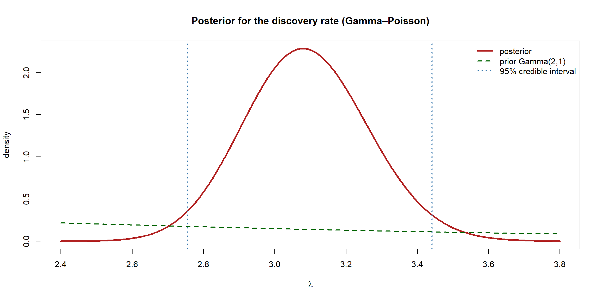
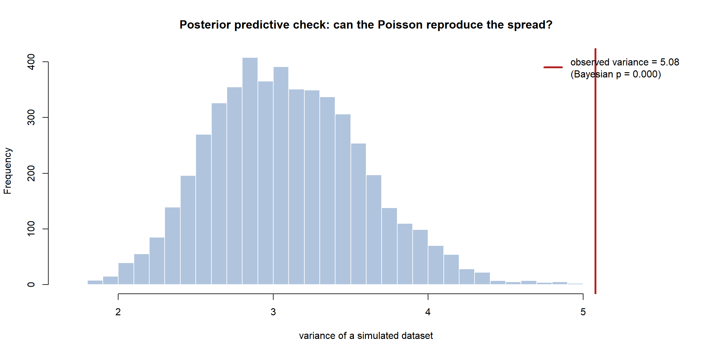
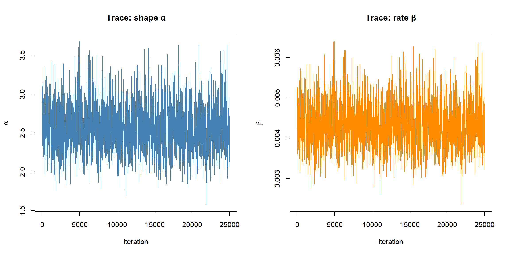
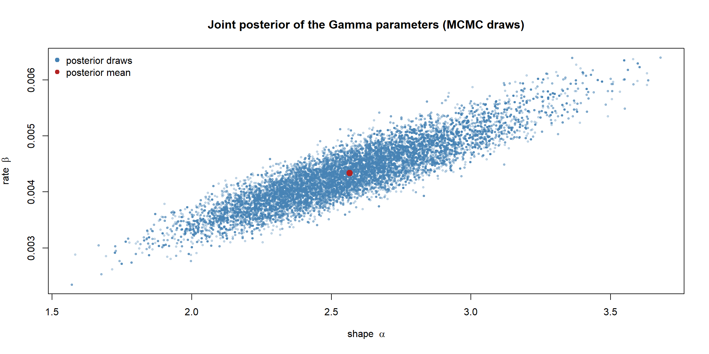
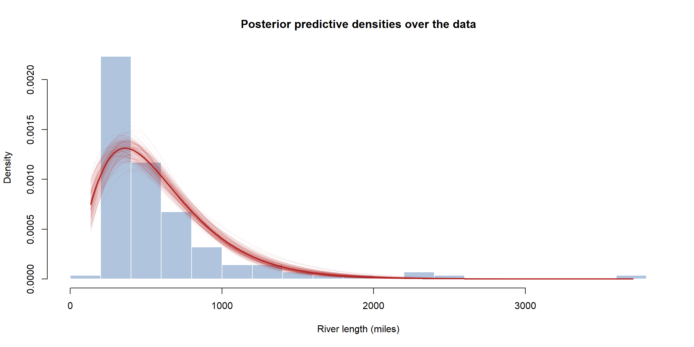

flowchart LR M["Pick a model<br/>+ a prior"] --> P["Posterior<br/>conjugacy or MCMC"] P --> U["Summarise<br/>mean + credible interval"] U --> T["Weigh a hypothesis<br/>posterior prob / Bayes factor"] T --> C["Posterior predictive check<br/>does the model fit?"] C --> D["Conclusion"]
Worked Examples: The Whole Bayesian Pipeline
Every previous page introduced one link in the Bayesian chain. This page joins them up on real data — and deliberately reuses the same two datasets the frequentist worked-examples page analysed, so you can read the two analyses side by side. We choose a model, pick a prior, compute the posterior (by conjugacy when we can, by MCMC when we cannot), summarise it with a credible interval, weigh a hypothesis, and — the step that matters most — check whether the model actually fits using the Bayesian’s natural diagnostic, the posterior predictive check.
The first case is conjugate and closed-form; the second is a two-parameter model with no conjugate prior, where the Metropolis sampler from the computation page takes over. As in the frequentist section, the lesson is the same in both: fitting a model is easy; trusting it is the real work.
Case study 1 — Great discoveries per year (Gamma–Poisson)
R’s discoveries dataset records the number of “great” discoveries each year from 1860 to 1959. Counts of rare events are the textbook setting for the Poisson model with rate \(\lambda\) — and the Gamma prior is conjugate to it, so the whole analysis is closed-form.
Code
```{r}
#| warning: false
#| message: false
y <- as.numeric(discoveries)
n <- length(y)
c(nYears = n, total = sum(y), mean = mean(y), variance = var(y))
``` nYears total mean variance
100.000000 310.000000 3.100000 5.080808 Prior, and the conjugate posterior
We choose a weakly-informative Gamma prior, \(\lambda \sim \text{Gamma}(a_0, b_0)\) with \(a_0 = 2,\, b_0 = 1\) — a gentle belief that the rate is a small single-digit number, easily overruled by 100 years of data. The Gamma–Poisson update from the priors page is pure arithmetic: add the total count to the shape, the sample size to the rate.
Code
```{r}
aPri <- 2; bPri <- 1 # weakly-informative Gamma prior
aPost <- aPri + sum(y) # posterior shape
bPost <- bPri + n # posterior rate
postMean <- aPost / bPost
cred95 <- qgamma(c(0.025, 0.975), aPost, bPost)
c(postMean = postMean, cred_lower = cred95[1], cred_upper = cred95[2])
``` postMean cred_lower cred_upper
3.089109 2.755810 3.441159 Code
```{r}
#| fig-align: center
lambda <- seq(2.4, 3.8, length.out = 600)
plot(lambda, dgamma(lambda, aPost, bPost), type = "l", lwd = 3, col = "firebrick",
xlab = expression(lambda), ylab = "density",
main = "Posterior for the discovery rate (Gamma–Poisson)")
lines(lambda, dgamma(lambda, aPri, bPri), lwd = 2, col = "darkgreen", lty = 2)
abline(v = cred95, col = "steelblue", lwd = 2, lty = 3)
legend("topright", bty = "n", lwd = c(3, 2, 2), lty = c(1, 2, 3),
col = c("firebrick", "darkgreen", "steelblue"),
legend = c("posterior", "prior Gamma(2,1)", "95% credible interval"))
```
The posterior is tight around \(3.1\) discoveries per year, and the broad prior is barely visible — the data dominates, exactly as the washout argument predicts. Reassuringly, the posterior mean and credible interval almost match the frequentist MLE and confidence interval for this dataset: with \(n = 100\) and a weak prior, Bernstein–von Mises has kicked in and the two sections agree.
Weighing a hypothesis
The historian’s claim from the frequentist page was that the long-run rate is exactly three per year. We answer it the Bayesian way — directly, with a posterior probability and a ROPE.
Code
```{r}
# Posterior probability the rate exceeds 3, and mass in a ROPE around 3
pGt3 <- 1 - pgamma(3, aPost, bPost)
rope <- c(2.8, 3.2)
pRope <- diff(pgamma(rope, aPost, bPost))
c(P_lambda_gt_3 = pGt3, P_in_ROPE_2.8_3.2 = pRope)
``` P_lambda_gt_3 P_in_ROPE_2.8_3.2
0.6899080 0.6950455 A rate of three is entirely plausible — it sits comfortably inside the posterior, with substantial mass on either side and a healthy chunk inside the practical-equivalence region. The Bayesian verdict matches the frequentist “do not reject,” but states it more usefully: the data are consistent with a rate near three, rather than merely failing to rule it out.
The crucial step: a posterior predictive check
A Poisson has a defining fingerprint — mean equals variance — and we already saw the sample variance exceed the mean. The Bayesian way to expose this is the posterior predictive check (PPC): simulate many fake datasets from the fitted model (drawing \(\lambda\) from the posterior, then data from \(\text{Poisson}(\lambda)\)), and ask whether a feature of the real data looks like it could have come from the model. If the observed feature lands in the tail of the simulated ones, the model fails.
NoteIn a nutshell: the “Bayesian p-value” is not the frequentist one
Despite the shared name, this is not a frequentist p-value (the probability of data this extreme under a null hypothesis). Here it is simply how often the fitted model out-produces the observed data on the feature you picked — e.g. how often a simulated dataset is more spread out than the real one. A value near 0 or 1 signals misfit (the data sits in a tail the model rarely reaches); values comfortably in the middle mean the model reproduces that feature fine.
Code
```{r}
#| fig-align: center
set.seed(1)
S <- 5000
lamDraws <- rgamma(S, aPost, bPost) # posterior draws
# For each draw, simulate a fake 100-year dataset and record its variance
repVar <- sapply(lamDraws, function(l) var(rpois(n, l)))
obsVar <- var(y)
# Bayesian p-value: how often does the model produce variance this large?
bayesP <- mean(repVar >= obsVar)
hist(repVar, breaks = 40, col = "lightsteelblue", border = "white",
xlab = "variance of a simulated dataset",
main = "Posterior predictive check: can the Poisson reproduce the spread?")
abline(v = obsVar, col = "firebrick", lwd = 3)
legend("topright", bty = "n", lwd = 3, col = "firebrick",
legend = sprintf("observed variance = %.2f\n(Bayesian p = %.3f)", obsVar, bayesP))
```
ImportantThe posterior was fine; the model was not
The observed variance sits far out in the right tail of what the Poisson can generate — the model systematically under-predicts the spread (overdispersion), and the Bayesian p-value is tiny. Every number we computed — the posterior, the credible interval, the hypothesis probabilities — was correct given the model, but the model does not describe this data well. A richer model (e.g. a negative binomial, equivalently a Gamma-distributed Poisson rate that varies year to year) would be more honest. This is the identical lesson the frequentist worked example reached, arrived at from the posterior instead of a dispersion statistic: inference is mechanical; trusting it requires a model check.
Case study 2 — Lengths of major rivers (Gamma, via MCMC)
Our second dataset, rivers, gives the lengths of 141 major North American rivers. Lengths are positive and right-skewed, so we model them with a two-parameter Gamma distribution (shape \(\alpha\), rate \(\beta\)). There is no conjugate prior for both Gamma parameters at once, so the posterior has no closed form — the perfect job for the Metropolis sampler from the computation page.
Code
```{r}
#| fig-align: center
x <- rivers
n <- length(x)
hist(x, breaks = 20, col = "lightsteelblue", border = "white", freq = FALSE,
xlab = "River length (miles)", ylab = "Density",
main = "Lengths of 141 major North American rivers")
rug(x)
```
Sampling the posterior with Metropolis
We use deliberately vague priors, \(\alpha,\beta \sim \text{Gamma}(0.001, 0.001)\), so the posterior is driven almost entirely by the likelihood (and will therefore land near the frequentist MLE — another Bernstein–von Mises check). Because both parameters must stay positive and live on very different scales, we run the random walk on the log scale — sampling \(\log\alpha\) and \(\log\beta\) unconstrained — and include the change-of-variables Jacobian. This is exactly what real samplers do under the hood.
NoteIn a nutshell: the Jacobian is just a correction term
The line jacobian <- lShape + lRate is a correction term you must add whenever you sample \(\log\theta\) instead of \(\theta\): stretching the scale changes how probability mass is spread out, and the Jacobian rebalances it so the posterior stays correct. Skip the “why” on a first read — but do keep the term in the code, because dropping it silently biases the answer. (The general rule is that switching variables multiplies the density by the derivative of the change; on the log scale that factor’s logarithm is just \(\log\alpha + \log\beta\).)
Code
```{r}
#| warning: false
#| message: false
set.seed(42)
# log posterior in the unconstrained (log-shape, log-rate) parameterisation
logPost <- function(lShape, lRate) {
shape <- exp(lShape); rate <- exp(lRate)
loglik <- sum(dgamma(x, shape = shape, rate = rate, log = TRUE))
logprior <- dgamma(shape, 0.001, 0.001, log = TRUE) +
dgamma(rate, 0.001, 0.001, log = TRUE)
jacobian <- lShape + lRate # from d(shape,rate) -> d(log shape, log rate)
loglik + logprior + jacobian
}
# Method-of-moments starting values (as the frequentist page used to seed optim)
m <- mean(x); v <- var(x)
start <- log(c(shape = m^2 / v, rate = m / v))
nIter <- 30000
chain <- matrix(NA, nIter, 2, dimnames = list(NULL, c("shape", "rate")))
current <- start
lpCur <- logPost(current[1], current[2])
step <- c(0.12, 0.12) # random-walk step sds on the log scale
nAcc <- 0
for (i in seq_len(nIter)) {
prop <- current + rnorm(2, 0, step)
lpProp <- logPost(prop[1], prop[2])
if (log(runif(1)) < lpProp - lpCur) {
current <- prop; lpCur <- lpProp; nAcc <- nAcc + 1
}
chain[i, ] <- exp(current) # store on the natural (shape, rate) scale
}
nAcc / nIter # acceptance rate
```[1] 0.3045667Code
```{r}
#| fig-align: center
burn <- 5000
draws <- chain[-(1:burn), ]
par(mfrow = c(1, 2))
plot(draws[, "shape"], type = "l", col = "steelblue",
xlab = "iteration", ylab = expression(alpha), main = "Trace: shape α")
plot(draws[, "rate"], type = "l", col = "darkorange",
xlab = "iteration", ylab = expression(beta), main = "Trace: rate β")
par(mfrow = c(1, 1))
```
Both traces are healthy fuzzy bands, so the chain has converged. Now the posterior summaries are just operations on the draws:
Code
```{r}
postSumm <- rbind(
shape = c(mean = mean(draws[, "shape"]),
quantile(draws[, "shape"], c(0.025, 0.975))),
rate = c(mean = mean(draws[, "rate"]),
quantile(draws[, "rate"], c(0.025, 0.975)))
)
round(postSumm, 4)
``` mean 2.5% 97.5%
shape 2.5651 2.0345 3.1692
rate 0.0043 0.0034 0.0054These posterior means and 95% credible intervals are close to the frequentist optim estimates and their Wald intervals from the previous section — the vague priors let the data speak, and the two paradigms converge.
Seeing the joint posterior
With two parameters the posterior is a surface, and the MCMC draws trace it out directly. The scatter of draws shows the strong shape–rate correlation — the same elongated, tilted cloud the frequentist bootstrap produced, here obtained as honest posterior samples rather than resamples.
Code
```{r}
#| fig-align: center
plot(draws[, "shape"], draws[, "rate"], pch = 19,
col = adjustcolor("steelblue", 0.25), cex = 0.5,
xlab = expression(paste("shape ", alpha)),
ylab = expression(paste("rate ", beta)),
main = "Joint posterior of the Gamma parameters (MCMC draws)")
points(mean(draws[, "shape"]), mean(draws[, "rate"]),
pch = 19, col = "firebrick", cex = 1.4)
legend("topleft", bty = "n", pch = 19, col = c("steelblue", "firebrick"),
legend = c("posterior draws", "posterior mean"))
```
Posterior predictive check
Finally the fit check. We draw parameter pairs from the posterior, generate a replicate dataset from each, and overlay the resulting posterior predictive densities on the data — the spread of curves is our uncertainty about the distribution. We also compare the longest observed river to the model’s predicted maximum, the feature most likely to break.
Code
```{r}
#| fig-align: center
set.seed(7)
hist(x, breaks = 20, col = "lightsteelblue", border = "white", freq = FALSE,
xlab = "River length (miles)", ylab = "Density",
main = "Posterior predictive densities over the data")
xs <- seq(min(x), max(x), length.out = 300)
idx <- sample(nrow(draws), 200)
for (i in idx) {
lines(xs, dgamma(xs, shape = draws[i, "shape"], rate = draws[i, "rate"]),
col = adjustcolor("firebrick", 0.05))
}
lines(xs, dgamma(xs, mean(draws[, "shape"]), mean(draws[, "rate"])),
col = "firebrick", lwd = 2)
```
Code
```{r}
# PPC on the maximum length: can the Gamma produce rivers as long as the longest real one?
repMax <- apply(draws[sample(nrow(draws), 4000), ], 1,
function(p) max(rgamma(n, shape = p[1], rate = p[2])))
c(observed_max = max(x),
predictive_median_max = median(repMax),
bayesP = mean(repMax >= max(x)))
``` observed_max predictive_median_max bayesP
3710.0000 1968.6594 0.0015 The body of the data is captured well by the cloud of predictive densities, but the longest real river (\(\text{max} = 3710\) miles) sits in the upper tail of the model’s predicted maxima — the Gamma’s tail is a touch too light, the identical mild caveat the frequentist Q–Q plot flagged. A perfectly honest report would say the Gamma describes typical rivers well but slightly understates the chance of an exceptionally long one.
TipGoing further 🚀
We built these predictive checks by hand, but in practice one function does it. Pass a matrix of replicated datasets yrep to bayesplot::pp_check(), or — if you fitted with brms — call pp_check() straight on the fit, and it overlays many model-simulated densities on the data automatically.
Code
```{r}
#| eval: false
library(bayesplot)
ppc_dens_overlay(y = x, yrep = yrep[1:50, ]) # data vs 50 replicate datasets
# or, for a brms fit, a single call does everything:
pp_check(fit) # default density overlay
pp_check(fit, type = "stat", stat = "max") # check a specific feature
```What every Bayesian worked example has in common
Strip away the specifics and both case studies followed one loop — the whole of this section:
flowchart TD
A["Look at the data"] --> B["Choose a model + a prior"]
B --> C["Posterior — conjugacy if possible, else MCMC"]
C --> D["Summarise — posterior mean + credible interval"]
D --> E["Weigh the question — posterior probability / Bayes factor"]
E --> F["POSTERIOR PREDICTIVE CHECK — does the model fit?"]
F --> G{"Does it pass?"}
G -->|"Yes"| H["Report posterior, interval and conclusion"]
G -->|"No"| B
| Step | Tool (and the page it came from) | Case 1 (Poisson) | Case 2 (Gamma) |
|---|---|---|---|
| Posterior | conjugacy (posterior, priors) | Gamma–Poisson, closed form | Metropolis MCMC |
| Summary | posterior mean + credible interval (posterior) | \(\approx 3.1\), tight CI | MCMC quantiles |
| Hypothesis | posterior prob / ROPE (testing) | rate \(\approx 3\) plausible | (parameters estimated) |
| Model check | posterior predictive check (computation) | overdispersion exposed | tail slightly light |
Compare this table with the frequentist worked-examples page: the questions are identical and the conclusions match, but every tool has its Bayesian counterpart — the posterior replaces the sampling distribution, credible intervals replace confidence intervals, posterior probabilities replace p-values, and the posterior predictive check replaces the residual diagnostic. Two philosophies, one workflow, and — when the data is plentiful — the same destination.